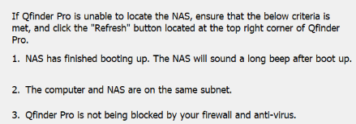

from nas_info import * from library import * Settings.OcrTextSearch = True Settings.OcrTextRead = True import sys nas_name = sys.argv[1] nas_lanip1 = sys.argv[2] nas_ac = sys.argv[3] nas_pwd = sys.argv[4] """ nas_name = "AT-TVS473" nas_lanip1 = "10.20.241.197" nas_ac = "admin" nas_pwd = "dqvtvs473" """ target = nas_detail(name = nas_name, lanip1 = nas_lanip1, ac = nas_ac, pwd = nas_pwd) def qfinder_onlineNAS(): fun_name = sys._getframe().f_code.co_name print("*** Start to " + fun_name + " ***") # open qfinder open_qfinder() num_list = [] for i in range(5): click() print("click refresh button") wait(2) wait_please(loop=10,time=10) wait(20) if exists(): print('refresh broken') break else: s = Region(Region(11,656,65,22)) online = s.text() online_list = online.split(":") online_num = online_list[1] print(online_num) online_num = replace_str(online_num,'l','1','.','','S','5', 'h','6','Z','2','O','0',' ','',')','2') num_list.append(int(online_num)) print(num_list) avarage = sum(num_list)/len(num_list) print(avarage) flag = "False" for i in num_list: if i - avarage > 3 or i - avarage < -3: print("refresh online fail") flag = "False" break else: print("refresh online pass") flag = "True" print(flag) with open("result.txt", "w") as fp: fp.write(flag) print("--- End " + fun_name + " ---") if __name__ == "__main__": qfinder_onlineNAS()